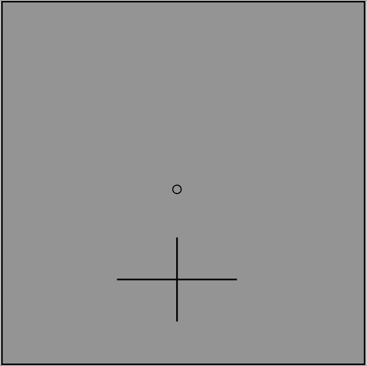

This is a study about visual perception. We are going to show you some displays, and ask you questions about what you see.
Your responses will only be useful if you do your best throughout the survey. Please don't multitask. The entire survey should take less than 3 minutes, so please stay focused on only this.
You will see a circle in the center of a black box. When the circle is on the screen, please make sure to keep your eyes on that circle. On each trial, a large cross (+) will briefly appear above or below that circle. Your job is to report which arm of the cross is longer (vertical or horizontal).
Here is an example:

In this example, you would respond that the horizontal arm is longer.
If you would like to participate in the survey, please press 'Start Experiment' to begin.
By completing this survey, you are consenting to be in this research study. Your participation is voluntary and you can stop at any time.